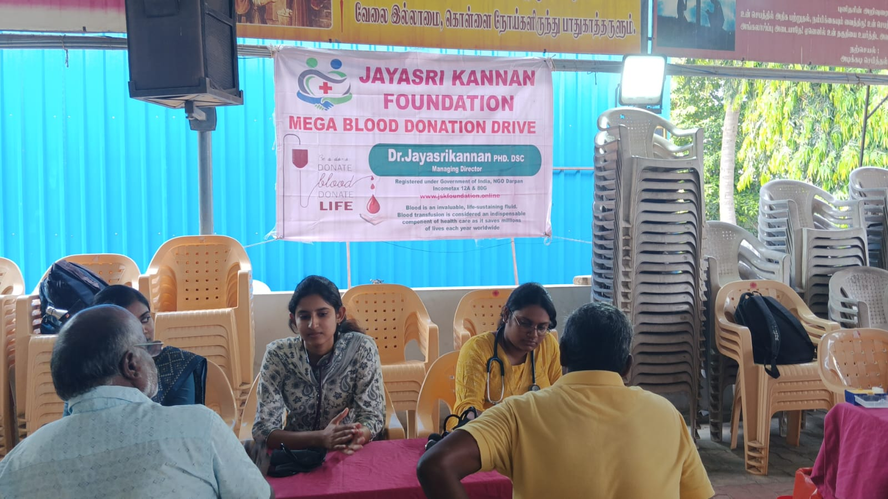

Donate Blood. Support Life. Voluntary blood donation can help patients who require blood and blood components.
Voluntary blood donation can help patients who require blood and blood components. Jayasri Kannan Foundation supports blood donation awareness and community blood donation programmes.
We collaborate with appropriate hospitals, blood banks and service organisations to conduct safe and well-organised blood donation camps.

One unit of blood can save up to three lives. By volunteering to donate blood, you become part of a vital lifesaving chain. Join us in making a difference.
Creating awareness in schools, colleges and communities about the importance of blood donation.
Mobilising volunteers and eligible donors from communities for the blood donation camp.
Conducting safe blood donation camps in collaboration with hospitals and blood banks.
Recognising and appreciating donors for their generous contribution to society.
Help us organise more blood donation camps across Tamil Nadu communities.